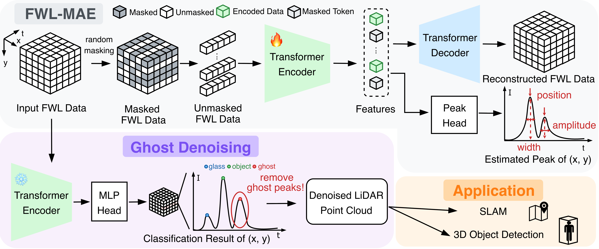
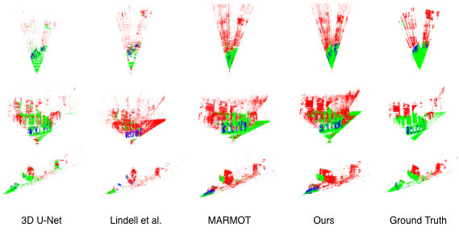
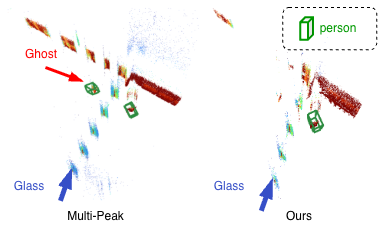
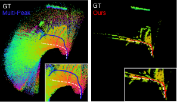

Ghost-FWL: A Large-Scale Full-Waveform LiDAR Dataset for Ghost Detection and Removal
Abstract
LiDAR has become an essential sensing modality in autonomous driving, robotics, and smart-city applications. However, ghost points (or ghost), which are false reflections caused by multi-path laser returns from glass and reflective surfaces, severely degrade 3D mapping and localization accuracy. Prior ghost removal relies on geometric consistency in dense point clouds, failing on mobile LiDAR's sparse, dynamic data. We address this by exploiting full-waveform LiDAR (FWL), which captures complete temporal intensity profiles rather than just peak distances, providing crucial cues for distinguishing ghosts from genuine reflections in mobile scenarios. As this is a new task, we present Ghost-FWL, the first and largest annotated mobile FWL dataset for ghost detection and removal. Ghost-FWL comprises 24K frames across 10 diverse scenes with 7.5 billion peak-level annotations, which is 100× larger than existing annotated FWL datasets.
Dataset
This section presents Ghost-FWL, the largest FWL dataset to date, which is specialized for ghost removal. Conventional LiDAR datasets provide only point cloud-level information, discarding the temporal multi-path information crucial for identifying ghosts caused by glass and reflective surfaces. Ghost-FWL addresses this gap by capturing complete temporal intensity histograms and providing peak-level annotations indicating the physical cause of each reflection (object, glass, ghost, or noise). Spanning 10 diverse scenes with 24,412 annotated frames and 7.5B peak-level labels, Ghost-FWL is 100× larger than prior annotated FWL datasets [Scheuble et al.], enabling learning-based ghost detection and removal at the waveform level.
| Access & Platform | Sensor | Labels | ||||||||
|---|---|---|---|---|---|---|---|---|---|---|
| Dataset | Year | Public | Platform | FWL | LiDAR Dim. |
Ray Den. |
Ghost | FWL Data |
Frames/ Scenes† |
Annotated Peaks |
| UNIST [1] | 2017 | ✓ | Stationary | ✗ | 3D | 278 | ✓ | ✗ | -- | -- |
| Leddar PixSet [2] | 2021 | ✓ | Mobile | ✓ | 3D | 0.267 | ✗ | ✓ | -- | -- |
| Lee et al. [3] | 2023 | ✗ | Stationary | ✗ | 3D | 278 | ✗ | ✗ | -- | -- |
| FRACTAL [4] | 2024 | ✓ | Aerial | ✗ | 2D | -- | ✗ | ✗ | -- | -- |
| Scheuble et al. [5] | 2025 | ✗ | Mobile | ✓ | 3D | 2.56 | ✗ | ✓ | 0.24k / 2 | NA |
| Ghost-FWL (Ours) | 2025 | ✓ | Mobile | ✓ | 3D | 200 | ✓ | ✓ | 24k / 10 | 7.5B |
FWL: Full-Waveform LiDAR. †Frames/Scenes: number of annotated frames and number of scenes within the real-world FWL data.
Method
Given FWL data, our framework predicts and removes ghost-related signals. Our model consists of a transformer-based encoder and an MLP head. We further introduce FWL-MAE, a masked autoencoder designed for representation learning on FWL data, explicitly trained to reconstruct peak position, amplitude, and width. The ghosts detected by our model are then removed from FWL data, and the cleaned data are utilized for downstream tasks such as SLAM and 3D object detection.

Results
Classification
Peak classification results and point cloud visualization after applying ghost removal. All results were obtained using the proposed framework. Red, green, and blue indicate Ghost, Object, and Glass, respectively.

SLAM
Trajectory and mapping generated by SLAM using Multi-Peak processing (left) and our ghost removal method (right). Multi-Peak processing includes numerous ghost points in the reconstructed map, leading to trajectory drift. The proposed method yields a trajectory that more closely follows the ground-truth path (white) by effectively removing ghost artifacts.
3D Object Detection
Qualitative evaluation of 3D object detection with Multi-Peak processing (left) and our ghost removal (right). Green bounding boxes indicate persons. With Multi-Peak, a ghost person is detected behind the glass wall, whereas our method suppresses this false detection.


BibTeX
@article{YourPaperKey2024,
title={Your Paper Title Here},
author={First Author and Second Author and Third Author},
journal={Conference/Journal Name},
year={2024},
url={https://your-domain.com/your-project-page}
}